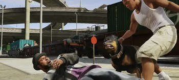
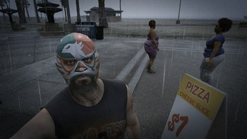
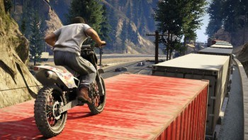
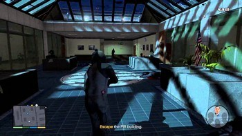

Índice
- Prólogo
- Franklin e Lamar
- Retomada de Posse
- Agravantes
- Pai/Filho
- Chop
- Terapia de Casais
- Garotinha do Papai
- Solicitação de Amizade
- O Bom Marido
- O Reconhecimento da Joalheria
- Bugstars: Equipamentos
- Granadas de Gás BZ
- O Golpe à Joalheria
- Stretch na Área
- Sr. Philips
- Trevor Philips Industries
- Ron Noiado
- Labirinto de Cristal
- Um Reencontro de Amigos
- Fama ou Desgrama
- A Volta dos que Não Foram
- Alguém Falou em Ioga?
- Dois é Bom, Três é Foda
- Safari na Quebrada
- Ao Pé da Letra
- O Reconhecimento do Porto
- Minissubmarino
- Cargobob
- Macacões
- Máscaras
- Caminhão Guincho
- Caminhão de Lixo
- O Golpe de Merryweather
- O Assassinato no Hotel
- Jogada Ensaiada
- Eu Lutei Contra a Lei
- Sr. Richards
- Vigilância Aérea
- O Assassinato Múltiplo
- O Assassinato da Luxúria
- O Assassinato no Ônibus
- Caida Libre
- Leve Turbulência
- Esquematizando o Golpe de Paleto
- Maquinário Militar
- Predador
- O Golpe de Paleto Bay
- Descarrilhado
- Fazendo Macaquices
- Hang Ten
- Fitando o Golpe
- Infiltrado
- O Assassinato na Construção
- Águas Passadas
- O Homem do Saco
- Carne Fresca
- A Balada do Rocco
- Limpando o FIB
- Reunindo a Família
- Pai Coruja
- A Planta do Arquiteto
- Caminhão de Bombeiros
- A Invasão do FIB – Plano A
- A Invasão do FIB – Plano B
- O Encerramento
- Lamar em Perigo
- Problemas Legais
- O Colapso
- Educando Filhos
- O Desvio
- Tuneladora
- O Grande Golpe – Plano A
- O Grande Golpe – Plano B
- Sensatez
- Chegou a hora
- A Opção C
1. Prólogo
O jogo começa em Ludendoff no ano de 2004. Trevor, Michael e Brad fazem um assalto a banco, prendendo os reféns em uma sala e explodindo o cofre com explosivos acionados por um celular. Ao pegar o dinheiro e sair do cofre, Michael é rendido por um guarda do banco, que é morto por Trevor com um tiro na cabeça. Eles então explodem uma porta do banco para fugir, mas são surpreendidos pela polícia. Após acabar com a resistência da polícia, os três vão para o carro de fuga. Eles vão seguir até um ponto onde deve ter um helicóptero a espera, mas a polícia os perseguem, o motorista “caipira” é morto, Michael assume o controle, mas bate em uma árvore ao desviar de um trem. Então seguem para o ponto de fuga, onde não encontram o helicóptero e são emboscados pela polícia. Michael e Brad são feridos enquanto Trevor tenta conter a polícia. Ele não consegue e foge sozinho. Em seguida é mostrado o falso enterro de Michael, assistido pelo próprio.
2. Franklin e Lamar
A segunda missão do GTA 5, Franklin e Lamar, começa mostrando uma conversa entre Michael e seu psicólogo. Depois Michael caminha pela praia, senta em um banco e é abordado por Franklin e Lamar perguntando onde fica a Bertolt Beach House. Os dois vão até a casa, roubam os carros 9F e Rapid GT apostando uma corrida até um estacionamento. A polícia de Los Santos (LSPD) é acionada, e eles fogem e despistam a polícia, levando os carros até a loja Premium Deluxe Motorsport onde o dono, Simeon, está enrolando Jimmy para que ele compre um SUV.
3. Retomada de Posse
Franklin é eleito o funcionário do mês na loja de carros do Simeon Yetarian. Este manda Franklin e Lamar buscar uma moto comprada por um membro de gangue de Vespucci Beach, Esteban Jimenez, que ficou inadimplente e não que não quer devolver a moto, na terceira missão do GTA 5, Retomada de Posse. Os dois vão até uma garagem onde acreditam que a moto esteja, em Vespucci Beach, mas são surpreendidos e encurralados por membros da gangue dos Vagos. Após eliminar os inimigos em um tiroteio, eles perseguem o sujeito com a moto, eliminam ele, recuperam a motocicleta, mas Lamar decide não devolver a moto para Simeon e fica com ela.
4. Agravantes
Simeon Yetarian manda Franklin para buscar o SUV comprado em sua loja pelo Jimmy, antes que ele cause danos ao carro. Franklin vai até a casa do Michael, elimina o jardineiro, invade a casa pela janela e rouba o carro. No caminho de volta, ele é surpreendido com uma arma na cabeça por Michael, que estava escondido dentro do carro. Michael fala para Franklin invadir a loja do Simeon com o carro, e depois espanca este.
5. Pai/Filho
Franklin vai até a casa de Michael pela bebida que este o ofereceu, para ver se Michael tinha algum esquema para ele. Eles estavam para um bar, mas Jimmy liga pedindo ajuda porque ele tentou vender o iate do pai dele, mas foi roubado. Eles entram no carro da Amanda, vão até a estrada oeste em Pacific Bluffs, avistam o barco, perseguem e se aproximam do caminhão, então Franklin pula em cima do barco e luta com um dos ladrões, que é jogada para fora. Michael atira e elimina outro ladrão. O imbecil do Jimmy fica pendurado na vela do barco e Michael tem que ir para baixo dele com o carro para resgatá-lo. Jimmy e Franklin pulam para dentro do barco, o carro para de funcionar e os ladrões conseguem levar o barco embora. Franklin e Jimmy levam o carro até a Los Santos Custom enquanto Michael vai para casa de táxi.
6. Chop
 Franklin chega em sua casa, mas se esconde de sua tia chata. Lamar aparece com o cachorro Chop, então eles vão até uma van para ir até a Vinewood Boulevard. Eles encontram Devin (D), membro da gangue dos Ballas, que foge de moto. Franklin e Lamar perseguem “D”, com a intenção de sequestrá-lo, que consegue fugir e se esconder em um terminal de trens. Franklin então corre atrás dele com o Chop, para farejar onde “D” está escondido, mas Chop encontra uma cadela e cruza com ela. Franklin encontra Devin e Chop corre atrás e morde ele. Lamar joga Devin dentro da van e leva ele para sua casa. Devin foge da van e Franklin deixa Lamar no centro
7. Terapia de Casais
Michael chega em casa, mas não encontra ninguém, então repara que há duas raquetes ao lado da porta. Ele sobe para o quarto, encontra Amanda com o instrutor de tênis, que pula pela janela de tanto medo. Franklin chega e vai com Michael atrás do Kyle com a caminhonete. Eles chegam até a casa onde acham que o instrutor mora, amarram o guincho do caminhão no suporte da sacada, Michael acelera o carro e derruba a sacada. Kyle liga para Michael avisando que a casa não é dele, então a dona da casa o interrompe e diz que ele está jurado de morte por Martin Madrazo. Um carro dos homens de Madrazo persegue e atira neles e Franklin atira de volta enquanto Michael dirige. Eles voltam para a casa do Michael, mas Martin Madrazo aparece por lá, ameaça e cobra 2 milhões do Michael para reconstruir a casa da namorada Natalia. Ele então decide adiar a aposentadoria e ligar para o Lester.
8. Garotinha do Papai
Michael está comendo batatinhas e assistindo TV quando ouve Jimmy falando bobagens, então vai até o quarto dele, discute e quebra a tv com uma cadeira. Os dois então vão andar de bicicleta em Vescpucci Beach e apostam uma corrida até o pier de Del Perro. Lá Jimmy revela que Tracey está no barco Dignity ali perto dando para os produtores de televisão. Michael vai até o barco e resgata Tracey, fugindo em um jetski, mas é perseguido e tenta despistá-los entrando nos canais de Los Santos.
9. Solicitação de Amizade
Michael reencontra seu velho amigo Lester, que dá a ele uma velha mochila e manda arrumar uma roupa de nerd. Michael vai até a loja Suburban, compra a roupa e depois vai ao prédio da rede social Lifeinvader. Lá ele sabota o protótipo do smartphone novo e vai para casa assistir a apresentação do aparelho na tv. No momento da apresentação Michael liga para o smartphone que está na mão do Jay Norris – paródia do Mark Zuckerberg e Steve Jobs -, então o dispositivo explode na cabeça do Jay.
10. O Bom Marido
Esta missão é opcional, Amanda, esposa de Michael, acaba se envolvendo em problemas com a polícia. Ela liga para Michael e pede para que ele prove ser um bom marido. Michael chega no local onde Amanda está presa dentro de uma viatura policial, Michael a rouba e despista os policiais. Após leve Amanda de volta para a mansão, a qual agradece e entra para dentro. (Muito cuidado quando atender a ligação de Amanda, pois se você recusar, não aparecerá novamente para fazer a missão).
11. O Reconhecimento da Joalheria
Michael vai até a antiga fábrica de roupa Darnel Bros, que é a nova sede secreta do Lester, que cita Niko Bellic na conversa e combina um novo golpe para ganhar dinheiro. Os dois vão até a joalheria que fica em Little Portola. Michael vai até a joalheria, tira fotos do sistema de ventilação e alarmes, e conversa com a atendente. Por último ele vai até o terraço da loja e tira uma foto do sistema de ventilação. De volta a fábrica de roupas, o jogador tem que escolher entre o plano inteligente e a forma burra e barulhenta, entre o piloto de fuga Eddie Toh e Karim Denz, e mais um assaltante entre Gustavo Mota ou Norm Richards, além dos hackers Christian Feltz, Paige Harris ou Rickie Lukens.
12. Bugstars: Equipamentos
Michael vai até o galpão da Bugstar, rouba uma van da empresa e leva até a fábrica de roupas do Lester, para usar na missão do roubo a joalheria.
13. Granadas de gás BZ
Michael vai até a van da Humane e rouba ela junto com a carga de gás BZ e a leva para a fábrica de roupas para ser usada no roubo da joalheria e liga para o Lester para avisar.
14. O Golpe à Joalheria
A equipe está reunida na fábrica de roupas Darnell Bros para o roubo à joalheria. Lester revisa o plano e diz o que todos devem fazer. Eles seguem para a joalheria. Franklin sobe no terraço, joga o gás do sono na ventilação e então eles realizam o assalto, quebrando as vitrines e pegando as jóias. Eles fogem de moto, mas a polícia os seguem até o canal, onde aparece o Michael com um caminhão e despista a polícia para chegar no ponto de encontro. As motos são colocadas dentro do caminhão e levadas até a garagem.
15. Stretch na Área
Franklin chega em casa e se depara com sua tia e outras feministas chatas na sala. Lamar aparece por lá com Stretch, que saiu da cadeia recentemente. Os três vão até a Ammu-Nation comprar armas e depois vão ao encontro de D-Devin no centro de reciclagem, achando que é uma reunião, mas é uma emboscada dos Ballas. Eles tem que combater os Ballas, fugir do local e da polícia e voltar para a casa do Franklin.
16. Sr.Philips
Franklin aparece na casa do Michael e logo depois aparece o agente Dave Norton do FIB, avisando sobre o perigo do Michael se expor com o roubo. Trevor reconhece a fala de Michael pelo noticiário da TV e descobre que seu velho “amigo” está vivo. Johnny Klebitz cobra explicações de Trevor por ele ter pego a namorada dele, então Trevor o mata. Ele vai com Ron e Wade até os motoqueiros da Lost MC e os provoca dizendo que matou o Johnny, então segue a van até o acampamento de trailers do motoqueiros e elimina todos. Trevor vai até o trailer do Ortega, empurra para o rio e o mata, ficando com o monopólio de armas e drogas para a “Trevor Phillips Enterprise“.
17. Trevor Phillips Industries
Trevor vai até o bar para encontrar o Tao Cheng e seu intérprete. Eles os leva para conhecer o negócio no laboratório de metanfetamina no liquor ace. Chef avisa que os capangas do Ortega vão aparecer por lá, então os dois se preparam e começam um tiroteio contra eles. Trevor usa o lançador de granadas para eliminar parte dos adversários. Depois de acabar com todos, liberta os chineses na máquina de gelo. Cheng e seu tradutor se assustam e vão embora.
18. Ron Noiado
Ron mostra a Trevor que o trailer foi todo destruído pelos motoqueiros. Wade aparece e é intimado a encontrar Michael. Ron e Trevor vão de quadriciclo até a ammu-nation, onde deve comprar um rifle de precisão com mira telescópica avançada e silenciador. Os dois seguem para o aeroporto no deserto e Trevor assume posição em cima da caixa d’água. Ele elimina os motoqueiros a distância, discretamente, enquanto Ron avança. Trevor derruba o helicóptero e vai ajudar Ron a tomar a pista e pouso. Ele sobe na asa do avião enquanto Ron pilota, e atira nos inimigos que estão na pista, até conseguir entrar em outro avião e seguir o Ron. Perto de Fort Zancudo eles voam baixo para não serem detectados. Eles soltam o carregamento no mar e volta para o aeroporto apostando corrida.
19. Labirinto de Cristal
Trevor chega no bar para negociar os termos do negócio com o Tao Cheng, porém os chineses revelam que não querem mais fazer negócio com ele, pois estão trabalhando com os irmãos O’Neil. Furioso, Trevor vai até a fazenda dos irmãos O’Neil, elimina todos eles, joga gasolina fazendo um rastro do laboratório até fora da casa, depois atira no rastro e a casa explode.
20. Um Reencontro de Amigos
Trevor aborda Wade para saber se ele encontrou o Michael. Wade enrola e revela que encontrou um Michael de Santa com uma mulher chamada Amanda e com dois filhos. Os dois vão para o estacionamento de trailers da gangue dos motoqueiros. Trevor implanta os explosivos nos trailers, elimina os motoqueiros e explode todo o acampamento do Lost MC. Eles seguem para Los Santos e se hospedam na casa deFloyd, primo de Wade.
21. Fama ou Desgrama
Michael está discutindo com Amanda, Jimmy e o viadinho da ioga, Fabien, quando Trevor aparece de surpresa na cozinha. Michael explica que entrou em um programa de testemunha, para a revolta de Trevor. Jimmy revela que Tracey está fazendo um teste para a TV, no programa Fama e Desgrama. Trevor e Michael vão para a Arena Maze Bank para evitar que Tracey vire piada nacional. Eles chegam na hora que Trecey vai se apresentar como ‘dançarina’. Michael interrompe empurrando o Lazlow e Trevor dá uma cadeirada no segurança. Lazlow foge e os dois perseguem ele de caminhão até o canal de Los Santos. Trevor obriga Lazlow Jones a ficar sem calça e a dançar, enquanto ele filma. Michael liga para Dave e fala para se encontrar com ele no observatório Galileo.
22. A Volta dos que Não Foram
Michael vai ao encontro de Dave Norton no observatório Galileo. Dave pede a Michael para verificar o corpo de Ferdinand Kerimov no escritório do legista e lhe dá uma cacetada na cabeça para ele “se fingir” de morto. Michael acorda no necrotério quando os açougueiros estão avaliando seu corpo. Ele levanta e assusta os dois, se esconde do segurança e procura o corpo, mas não encontra. Michael precisa sair do edifício, troca tiro com seguranças e foge pela janela. Por último Michael vai para os campos de petróleo se encontrar com Franklin para revelar que trabalha para os federais e que seu amigo Trevor reapareceu.
23. Alguém Falou em Ioga?
Michael está fumando, bebendo e assistindo tv tranquilamente quando Amanda entra e começa a discutir com ele. O professor de ioga, Fabien, aparece e convida Michael para fazer uma seção. O jogador então tem que pressionar os botões para o Michael fazer as posições babacas que o Fabien pedir. Depois Michael vai até o Burger Shot para levar Jimmy até o amigo dele. Jimmy dá para seu pai uma droga veterinária e empurra ele para fora do carro. Michael tem alucinações, imaginando que está cercado de macacos, que é abduzido por alienígenas e que está voando por Los Santos. Ele acorda, volta pra casa e descobre que sua família o abandonou.
24. Dois é Bom, Três é Foda
Michael se encontra com Dave Norton e Steve Haines na sede do FIB. para discutir sobre o resgate do Ferdinand Karimov. Michael vai até o ponto de encontro e apresenta Franklin e Trevor um para o outro. Os três vão de helicóptero até o prédio da FIB e começam a missão de resgate, com Trevor pilotando o helicóptero, Michael escalando o prédio e Franklin dando cobertura com um rifle de sniper. Eles resgatam Ferdinand, mas são perseguidos por helicópteros do FIB, que são logo destruídos e eles fogem.
25. Safari na Quebrada
Franklin chega em casa e houve um monte de bobagens sobre lealdade de sua tia Denise e Lamar. Trevor chega e oferece 7 dólares para ela comprar algo bacana. Trevor, Franklin, Lamar e Chop entram na van e vão até a Grove Street. No meio do caminho aparece um easter egg do Carl Johnsons “CJ” andando de bicicleta. Eles vão até a casa comprar drogas, mas descobrem que tem menos do que devia, então começa o tiroteio entre eles e a gangue. Depois eles tem que fugir da polícia pelo canal, utilizando jetski e então voltam para a casa do Lamar.
26. Ao Pé da Letra
Michael e Trevor se encontram com Dave Norton, Steve Haines e Devin Weston em um galpão abandonado. Eles amarram o Ferdinand numa cadeira para torturá-lo. Michael e Dave vão até Rockford Hill, no Caesars Place, para procurar e eliminar Tahir Javan. O endereço passado pelo azerbaijano estava errado, então Trevor começa a torturá-lo. Ferdinand então revela que Tahir mora em Chumash, na Estrada Oeste. Ele é torturado até conseguir passar todas as características físicas do alvo. Michael consegue identifica-lo e atira no alvo. Trevor decide levar Ferdinand para o aeroporto para ele fugir e os federais não o matarem.
27. O Reconhecimento do Porto
Trevor, Wade e Floyd se vestem como funcionários do porto e vão para lá. Trevor dirige uma empilhadeira e tem que colocar os contêineres no local correto e depois ir até o guincho para colocar os contêineres nas carretas. De cima da passarela do guincho, Trevor tira uma foto do navio e manda para Ron, depois pega a carreta e vai até a área de carga restrita e rouba uma maleta na portaria e volta para a casa do Floyd, onde ele escreve os planos para entrar na Merryweather. O jogador tem que escolher entre a táticado cargueiro ou alto-mar.
28. Minissubmarino
Trevor entra no navio, joga o submarino no mar, e vai de encontro ao Floyd, que puxa o submarino com um guincho até a carreta. Trevor leva o caminhão com a carga até o armazém.
29. Cargobob
Trevor invade o forte Zancudo para roubar o helicóptero Cargobob para usar no golpe à Merryweather. Para isso ele tem que combater os soldados, escapar dos mísseis anti-aéreos de dos helicópteros Buzzard, e também despistar a polícia para então pousar com ele no aeroporto do deserto.
30. Macacões
Trevor liga para Michael e Franklin em conferência e diz que precisam arranjar máscaras e macacões para o realizar o plano. Um dos três personagens vai até a ammu-nation e compra 3 macacões.
31. Máscaras
 Um dos três personagens vai até a loja de máscaras e compra três máscaras para usar no plano. Compre todas as máscaras de hóquei branco em menos de 20 segundos para conseguir medalha de ouro.
32. Caminhão Guincho
Um dos três personagens vai até uma oficina mecânica e rouba um caminhão guincho para usar no no roubo a Merryweather. Ele leva o guincho até o terreno da FIB.
33. Caminhão de Lixo
Um dos três personagens tem que roubar um caminhão de lixo para usar no no roubo a Merryweather, despistar a polícia e levar o veículo até o terreno da FIB.
34. O Golpe de Merryweather
Trevor, Franklin e Michael se reúnem no apartamento do Floyd para planejar o golpe a Merryweather e vão até o aeroporto de Sandy Shores, entram no helicóptero cargobob, guincham o submarino e voam até o mar, onde estão sendo realizados testes do governo. O submarino é então solto e Trevor vai com ele até o dispositivo. Michael reboca o submarino com o cargobob, mas barcos e helicópteros Buzzard da Merryweather aparecem e eles tem que derrubá-los. Eles conseguem voltar à pista de pouso, e lá está Lester inconformado com o roubo da arma nuclear e Trevor descobre que não vai ganhar nada.
35. O Assassinato no Hotel
Franklin e Lester se encontra em frente ao Dune-O’s Beach Cafe e planejam o assassinato de Brett Lowry, diretor da Bilkinton Research, que subornou o FDA para continuar a vender o remédio Pria pol para impotência, pois estava causando mortes. O “Sr. Ganância Lowrey” está hospedado no Hotel Von Crastenburg em Richman. Franklin tem que ir para lá, implantar bombas na entrada do hotel ou esperar no estacionamento ao lado com um rifle de precisão, para eliminar o alvo quando ele aparecer.
36. Jogada Ensaiada
Franklin, Michael e Trevor se encontram para combinar um assalto a carro-forte. Eles vão até Cypress Flats. Michael bloqueia a rua com o caminhão de lixo, enquanto Trevor observa do alto quando o carro-forte vai chegar. O carro-forte para na rua, então Franklin acelera o carro-forte com tudo e faz o carro-forte capotar de lado. Franklin cola bombas adesivas nas portas traseiras do carro-forte e consegue arrombá-lo. Eles “limpam” o carro e se posicionam para enfrentar a polícia. Depois de eliminar os policiais, Franklin leva o caminhão até o carro de fuga, explode o caminhão de lixo e cai fora. Enquanto isso Michael vai para a casa do Devin para entregar uma encomenda. Devin então oferece novos serviços para Michael e passa o contato de Solomon Richards para ele.
37. Eu Lutei Contra a Lei
Franklin, Michael e Trevor se encontram com Devin no prédio em construção no centro de Los Santos. Eles planejam roubar dois carros Entity XF e Cheetah de mauricinhos se disfarçando de policiais de trânsito. Franklin tem que ir até o posto de gasolina em Blaine County para provocar e tirar um racha com os donos dos carros esportivos. Quando eles passam, Trevor e Michael os perseguem de moto, fingindo que são políciais de trânsito. Os motoristas param em cima da ponte, então Michael e Trevor roubam os carros. Os três vão embora para a oficina do Devin, que não gosta do serviço e não quer pagar. Ele então fala para eles roubarem o Z-Type do produtor musical Chad Mulligan.
38. Sr. Richards
Michael vai ao escritório do produtor de cinema Solomon Richards e este conta como será seu novo filme “O Colapso”, sobre a crise financeira americana. Então ele fala sobre o ator Milton Mcllroy e de Rocco Pelosi, que estão atrapalhando as filmagens, e do diretor Anton Beaudelaire, que está passando por um colapso mental e não está querendo filmar. Michael vai para East Los Santos para levá-los de volta ao estúdio. Um helicóptero desce em cima do clube onde os três estão e Michael tem que chegar até ele pelo telhado sem chamar a atenção. Chegando lá ele briga com Rocco e pilota o helicóptero até o estúdio, mas antes tem que assustar os passageiros para eles cooperarem, passando por debaixo de uma ponte e fazendo manobras perigosas. Por último, ele leva o ator e o diretor de volta para o Solomon.
39. Vigilância Aérea
Trevor vai até a delegacia de polícia de Los Santos a mando do Devin e entra a bordo do helicóptero da polícia. Na aeronave há um scanner que rastreia a identidade de qualquer pessoa cadastrada. Ele tem que escanear o Franklin e depois fazer a leitura do alvo na avenida Hawick. Depois faz a checagem em outro lugar e acha o Chad Mulligan, mas sem o carro. Trevor persegue o alvo com a câmera, até que ele chega a uma garagem. Franklin chega perto de Chad, mas ele se assusta e foge com o carro. Trevor continua a perseguí-lo com o câmera, até que o alvo se esconde em uma garagem. Ele liga a visão térmica e vê várias pessoas lá, então Franklin vai conferir pessoalmente, encontra Chad e foge com seu valioso carro Z-Type. Então ele liga para Molly, que diz para ele levar o carro para o aeroporto.
40. O Assassinato Múltiplo
Franklin fala com Lester pelo orelhão de um posto sobre a Redwood Cigarettes, “O cigarro que construíu os Estados Unidos”. Lester fala que a empresa compra o juri para não ter que pagar o tratamento de usuários com enfisema. Ele passa o nome de quatro membros do juri que são corruptos, e Franklin tem que eliminá-los. O primeiro jurado é um homem forte, que está fazendo exercícios perto da praia. O segundo jurado está em um barco junto com uma piranha. No terceiro jurado, a Rockstar coloca uma legenda confusa, levando o jogador ao erro… Você não tem que esperar ninguém aparecer na janela, nem atirar diretamente no homem que está limpando janelas. Ele é o jurado, mas você tem que atirar no cabo de aço que sustenta a plataforma, para ela cair e o jurado morrer. O último jurado está de moto. Atire ou atropele ele, depois despiste a polícia.
41. O Assassinato da Luxúria
Franklin atende o orelhão e Lester fala sobre Jackson Skinner, chefe de desenvolvimento de produtos de fachada, que vende dados particulares. Lester revela que o sujeito sai sempre com a mesma prostituta, então Franklin fica de olho na garota até que seu alvo chegue. Ele então tem que eliminar o motorista do carro que a prostituta entra.
42. O Assassinato no Ônibus
 Lester liga para Franklin e fala para ele eliminar o Isaac Penny, que assumiu participação majoritária na Vapid Motor Company e despediu milhares de trabalhadores. Ele é um bilionário mão de vaca que pega ônibus para voltar pra casa. Franklin tem que pegar um ônibus e ir de ponto em ponto, até encontrar seu alvo, para depois eliminá-lo.
Lester liga para Franklin e fala para ele eliminar o Isaac Penny, que assumiu participação majoritária na Vapid Motor Company e despediu milhares de trabalhadores. Ele é um bilionário mão de vaca que pega ônibus para voltar pra casa. Franklin tem que pegar um ônibus e ir de ponto em ponto, até encontrar seu alvo, para depois eliminá-lo.
43. Caida Libre
Michael e Trevor vão a casa de Martin Madrazo. Ele pede que Michael assassine seu primo, Javier, que quer testemunhar contra ele. Javier vai de avião até Liberty City, então Michael vai ter que ir até uma colina onde tem uma arma, e atirar contra a aeronave. Trevor tem que perseguir a aeronave até o lugar de sua queda, para recuperar os documentos do Madrazo. Trevor discute com Martin e então sequestra a mulher dele, Patricia.
44. Leve Turbulência
Franklin não encontra Michael na casa, então liga para ele e fica sabendo que eles estão escondidos no deserto. Ron avisa Trevor que vai chegar um carregamento de armas da Merryweahter, então eles vão até o aeroporto no deserto e Trevor pega um avião Crop Duster para perseguir o avião de carga da Merryweather. Para isso, ele tem que voar baixo para não ser detectado pelos radares. Ele então se aproxima da aeronave e bate na sua porta traseira, conseguindo entrar no avião, elimina toda a tripulação e assume o comando do aviãode carga. Caças interceptam ele e ameaçam derrubá-lo. Trevor tenta escapar, mas eles disparam, então ele pula de pára-quedas para se salvar.
45. Esquematizando o Golpe de Paleto
Steve Haines e Dave Norton chegam e interrompem a discussão de Michael e Trevor. Michael e Trevor vão até Paleto Bay e esperam por Lester, que chega de ônibus. Eles vão até o banco e começam a planejar o roubo. Michael atira no alarme do banco, vai até um posto vizinho e observa a movimentação da polícia. Trevor e Michael apostam uma corrida até o escritório no Liquor Ace. Lester apresenta o plano de assalto ao banco de Paleto Bay.
46. Maquinário Militar
Trevor tem que roubar o caminhão Barracks do comboio do exército que está indo para o forte Zancudo e leve para o laboratório de metanfetaminas do Trevor.
47. Predador
 Franklin persegue os irmãos O’Neil restantes (Walton, Wynn e Elwood) junto com seu cão Chop. Um veado entra na frente do carros dos irmãos e eles caem no penhasco. Franklin vai atrás deles, mas eles fugiram para o mato a pé. Franklin liga para Trevor e pede suporte aéreo. Trevor vai com o helicóptero roubado da FIB e Michael tenta encontrar os alvos com o rifle, mas não consegue pois está muito escuro, então ele acione a mira térmica. Neste momento é possível ver o easter egg do pé-grande. Michael encontra os caipiras e atira neles. O último irmão atira um míssil contra o helicóptero e Franklin solta o Chop para procurá-los. O último irmão, Elwood O’Neil, é morto e Franklin sobe no helicóptero e voltam para o aeroporto.
Franklin persegue os irmãos O’Neil restantes (Walton, Wynn e Elwood) junto com seu cão Chop. Um veado entra na frente do carros dos irmãos e eles caem no penhasco. Franklin vai atrás deles, mas eles fugiram para o mato a pé. Franklin liga para Trevor e pede suporte aéreo. Trevor vai com o helicóptero roubado da FIB e Michael tenta encontrar os alvos com o rifle, mas não consegue pois está muito escuro, então ele acione a mira térmica. Neste momento é possível ver o easter egg do pé-grande. Michael encontra os caipiras e atira neles. O último irmão atira um míssil contra o helicóptero e Franklin solta o Chop para procurá-los. O último irmão, Elwood O’Neil, é morto e Franklin sobe no helicóptero e voltam para o aeroporto.
48. O Golpe de Paleto Bay
Franklin, Lester, Michael e Trevor estão reunidos no Liquor Ace para realizar o golpe ao banco de Paleto Bay. Eles vão até lá, deixam o Franklin ali perto e invadem o banco, rendendo os clientes e roubando o cofre. A polícia chega, e então os três saem do banco pesadamente armados – Trevor com uma minigun – e protegidos. Eles combatem a polícia, mas o exército chega com equipamento pesado, como tanques. Franklin aparece com uma escavadeira, e vai com ela resgatar Michael e Trevor. Eles vão até a parte de trás da fábrica e fogem com um trem. O agente Sanchez aparece para pegar o dinheiro.
49. Descarrilhado
 Michael entra no trailer do Trevor e é avisado por Ron que o trem mensal está vindo. Então Trevor vai pular no trem de moto, enquanto Michael vai pra baixo da ponte de Reton Canyon. Ele abate o maquinista e toma o controle do trem. Enquanto isso Michael vai para de baixo da ponte com um bote. Quando ele chega lá, vê os dois trens batendo de frente e Trevor pulando. Os trailers caem todos no rio. Michael explode a tampa do contêiner e remove o ouro, enquanto Trevor dá cobertura na beira do rio, e os homens da Merryweather chegam. Os dois se livram deles e fogem de barco Rio abaixo, porém os homens da Merryweather os perseguem de bote. Eles fogem e vão para a praia, onde há veículos de fuga.
50. Fazendo Macaquices
Michael, Trevor e Franklin se encontram com Dave e Steve em Cape Carfish. Enquanto Trevor e Franklin cuidam da fuga, Dave, Steve e Michael vão de barco e mergulham até uma entrada subterrânea que dá acesso ao prédio da Merryweather. Michael corta a grade de proteção com um maçarico e nada até o laboratório. Ele usa a arma de choque para atacar os pesquisadores e chegar até a neurotoxina. Ele pega a neurotoxina e na volta eles tem que combater os seguranças do local. Depois de eliminar os guardas, Michael coloca a neurotoxina na unidade de refrigeração. Trevor chega com o helicóptero de carga Cargobob e leva a carga para a pista de pouso e coloca na carreta do caminhão. Por último, Trevor leva Patricia de volta para seu marido, Martin Madrazo.
51. Hang Ten
Trevor vai ao apartamento do primo do Wade, Floyd, e é mal recebido. A namorada dele, Debra, está lá e aponta uma arma para Trevor e ele mata os dois. Depois vai com Wade até o clube de Striptease Vanilla Unicorn e tome conta do lugar.
52. Fitando o Golpe
Michael, Trevor, Lester e Franklin se reúnem no Vanilla Unicorn e começam a falar do grande golpe ao Union Depository, para roubarem 100 milhões em ouro. Michael e Franklin observam as entradas do banco enquanto Trevor e Lester vão pegar um helicóptero no aeroporto do deserto. Eles voam até Murrieta Heights. Trevor segue o comboio de carros forte, enquanto Lester filma. Por último filmam a entrada da construção ao lado da banco e vão embora.
53. Infiltrado
Franklin liga para Molly, que pede a ele que pule o muro do estúdio e roube o carro JB 700. Para isso, ele apaga um ator chamado Brandon e rouba a roupa dele para se aproximar do carro. Então rouba o carro JB 700, foge dos seguranças e entrega o carro na oficina do Devin Weston. Aperte o botão para ejetar o banco do carro com a atriz chata junto. Lamar descobre a localização de Franklin e aparece na oficina.
54. O Assassinato na Construção
Franklin atende ao telefonema do Lester em um orelhão. Lester informa que Franklin vai ter que eliminar o mafioso e incorporador imobiliário Enzo Bonelli, dono da da Gold Coast Development. Franklin vai até o prédio em construção no centro de Los Santos, onde Enzo está, no topo do prédio, perto do helicóptero.
55. Águas Passadas
Trevor vai até a casa do Michael e eles discutem sobre o passado. Trevor pergunta quem foi enterrado no lugar de Michael e ele chega a conclusão que Brad está enterrado na cova, mas não diz nada. Ele vai para o aeroporto de Los Santos para pegar um vôo até North Yankton. Michael vai atrás, mas os dois são observados e seguidos pelos homens do sr. Cheng. Ele vai até o túmulo dele no cemitério de Ludendorff e encontra Trevor cavando. Trevor cava até o caixão e descobre que Brad está morto e enterrado ali. Os homens do Sr. Cheng cercam os dois no cemitério, mas Michael fica, enquanto Trevor foge… Ao tentar escapar de carro, Michael é capturado. Trevor volta pilotando para San Andreas e pousa no aeroporto de Sandy Shores. Wen Cheng liga para Trevor ameaçando matar Michael, pois Trevor está atrapalhando a expansão dos negócios dele em Blaine County.
56. O Homem do Saco
Trevor liga para Lamar, que o chama para participar da equipe de roubo de carros do Devin Weston. Lamar pede para Trevor buscar o caminhão cegonha Packer. Franklin vai ao encontro de Lamar e dirige o carro Pegassi Monroe e coloca ele em cima do Packer, que está na frente da garagem do Devin. Os três então seguem com o caminhão cegonha até Paleto Bay, pela Senora Freeway. No meio do daminho a polícia persegue eles. Franklin vai para trás do caminhão e sai com o carro JB 700, para eliminar os carros dos policiais. Eles escapam da polícia, então Franklin liga para Molly e avisa que está subindo a Great Ocean Highway e então se encontram com a Molly. Ela os enrola e mais uma vez não paga pelos roubos.
57. Carne Fresca
Trevor vai para a casa de Franklin, tropeça na cerca e fica revoltado por Franklin rir da cara dele. Franklin pergunta sobre Michael. Trevor responde que ele foi sequestrado por chineses de Yangshan, China. Franklin liga para Lester e recebe o aplicativo Trackify para rastrear a localização do celular do Michael. Os chineses ligam a máquina no frigorífico e Michael está indo lentamente em direção a máquina de corte. Franklin chega ao local e consegue resgatar Michael e os dois conseguem sair de lá. Após eliminar os chineses vão para a casa do Michael.
58. A Balada do Rocco
Michael chega ao estúdio e vê Solomon sendo espancado por dois homens. Ele vai atrás do Rocco e do Gianni e mata os dois. Michael volta ao escritório do Solomon e este mostra o nome de Michael nos créditos do filme ‘O colapso’.
59. Limpando o FIB
Michael, Lester, Dave e Steve se reúnem na fábrica Darnell Bros. Steve Haines manda Michael apagar os arquivos dele dentro da sede do FIB. Lester e Michael vão para o prédio da FIB. Eles param em frente a entrada e esperam o carro do zelador Harvey passar para seguí-lo até o apartamento dele. Michael entra no apartamento do sujeito e pega o macacão e crachá dele para usar na invasão do FIB. De volta a fábrica eles encontram Franklin. Lester fala que precisa das plantas do prédio do FIB, que estão com o arquiteto Chip Peterson. Michael manda Franklin buscar a planta.
60. Reunindo a Família
Michael acorda de manhã com o Jimmy chamando ele. Os dois vão até o Bean Machine para encontrar com Amanda, que está com Fabien, que tem a cara quebrada por Michael. Jimmy, Michael e Amanda combinam de ir no consultório do dr. Friedlander e vão buscar Tracey no estúdio de tatuagem. Michael encontra Lazlow, corta o rabo de cavalo dele e faz uma tatuagem. A família se encontra no consultório do Dr. Friedlander, discutem e voltam pra casa.
61. Pai Coruja
Tracey liga para Michael pedindo ajuda, pois tem um homem perseguindo ela no Vinewood Plaza. Ele vai até ela e procura o suspeito com com o carro da Tracey, na Hawaiian Snow, depois no motel do lado da construção, no Cluckin Bell, em Rockford Plaza e depois no Croq-a-Hoop. Então eles encontram o cara. Michael o persegue e mata-o.
62. A Planta do Arquiteto
Franklin vai até o prédio em construção no centro de Los Santos e segue o arquiteto, que está com as plantas do prédio do FIB. Ele nocauteia o arquiteto, rouba a maleta e foge dos funcionário do canteiro de obras e da polícia. Franklin leva as plantas para o Lester na fábrica de roupas, onde Michael também está. Lester explica o golpe e o jogador tem que escolher entre dois planos: Disfarçar-se de zelador, plantar a bomba e explodi-lá, para invadir o prédio disfarçados de bombeiros, ou invadir o prédio de pára-quedas e hackear o sistema. Também deve escolher um hacker, um atirador e um piloto de fuga.
63. Caminhão de Bombeiros
Se você escolheu o Plano A da Invasão do FIB, precisará roubar um caminhão de bombeiro. Vá com o Michael a uma rua ou bairro pouco movimentado, ligue para 911 e chame os bombeiros. Quando eles chegarem roubem o caminhão, fuja da polícia e entregue na “garagem” do Lester.
64. A invasão do FIB – Plano A

Michael e Lester se reúnem na fabrica para a invasão do FIB. Depois da introdução, siga para o prédio do FIB e passe pelas catracas usando o cartão de acesso. Entre no elevador para subir, vá a sala onde há um esfregão para você usar, siga até os escritórios. Esfregue o chão usando os comandos descritos. Depois de limpo coloque e arme a bomba no armário ao lado. Pegue o balde, o esfregão e siga para outra sala. Novamente esfregue o chão e siga em frente para limpar o corredor seguinte. Neste corredor coloque a bomba dentro do banheiro, volte e pegue novamente o balde. Agora volte para o armário onde foi pego o balde com o esfregão, entre no elevador e saia do prédio.
Agora com o caminhão de bombeiros, siga até Michael para pega-lo. Quando Michael entrar no caminhão use o celular para acionar as bombas C4. O prédio explodirá. Siga para o prédio, entre no elevador e siga para o ultimo andar usando as escadas. Uma vez no seu destino, siga para pegar o drive de contenção que está marcado no seu mapa de localização. Para isso, você terá que explodir a porta antes, assim que pegar o drive, siga seus comparsas. Na fuga, um deles morre devido a explosão da porta, continue seguindo. Em uma certa altura, Franklin apaga por causa de uma explosão e quando acorda fica sabendo que os policiais já descobriram que eles não são bombeiros. Pegue uma arma e siga em direção aos seus amigos matando seus inimigos que entrarem em seu caminho. Quando encontrar eles, suba nos destroços, siga para fosso do elevador e desça de rapel. Agora saia do prédio, entre no caminhão de bombeiros e siga para o local de fuga. Quando chegar destrua o caminhão de bombeiros, entre no outro carro estacionado e vá para a casa do Lester para terminar a missão.
65. A invasão do FIB – Plano B
Michael vai até a fábrica de roupas e vê Lester jogando gasolina para queimar o lugar. Franklin chega e então eles vão até o prédio da N.O.O.S.E. em Palomino Highlands. Eles seguem até o centro de Los Santos com o helicóptero e pulam de paraquedas, até cair no terraço do prédio do FIB. Eles quebram o vidro do teto e entram na sede. Michael vai até a sala do servidor e explode a porta. O alarme é acionado. Michael entra no computador, clica em ConectarHackear.exe e tem que encontrar o IP na sequência de números. Depois ele roda o aplicativo ForçaBruta.exe. O jogador tem que alinhar as letras em vermelho. Michael então clica em Desligado&Fora para copiar os arquivos. Enquanto os arquivos são copiados, Michael, Franklin e o atirador resistem ao ataque dos seguranças do FIB. O helicóptero de resgate é derrubado pelo FIB. Eles então descem por dentro do prédio, e por fora, usando cordas. Eles resistem ao ataque da polícia e da equipe do N.O.O.S.E. até conseguirem entrar no carro de fuga. Eles despistam a polícia, vão para a casa do Lester e se encontram com o Lester.
66. O Encerramento
Michael vai até o Kortz Center, em Pacific Bluffs, e se encontra com Dave. Steve chega com o agente Andreas Sanchez e manda prender os dois. Uma equipe do FIB chamada por Sanchez cerca os quatro. Steve leva um tiro na perna e atira na cabeça do agente, então começa o tiroteio. Michael tem que fugir do Kortz Center com o Dave Norton. Agentes da Merryweather aparecem de helicóptero, entãoTrevor aparece com um rifle sniper, ajuda Michael e Dave, e todos eles conseguem fugir.
67. Lamar em Perigo
Tanisha Jackson aparece na casa do Franklin e pede ajuda, pois Lamar está com problemas por causa do Stretch e foi sequestrado pelos Ballas. Ele vai até a serralheria em Paleto Bay e se encontra com Michael e Trevor lá. Eles invadem o local, combatem os Ballas e libertam o Lamar. Franklin leva Lamar para casa e é abordado por Steve e Dave. Eles pedem para que Franklin mate o Trevor.
68. Problemas Legais
Michael vai até o escritório do Solomon e encontra Molly e Devin lá. Devin diz que o filme será cancelado e o estúdio destruído para criação de um condomínio. Solomon chega com os negativos do filme, mas Molly os pega e vai embora. Michael vai atrás dela até o aeroporto de Los Santos, onde ela morre sugada pela turbina de uma avião.
69. O Colapso
Michael vai à loja de roupas Ponsonbys para comprar um terno para ir à estréia do filme “O Colapso”. Ele vai ao ao Oriental Theater em Vinewood Boulervard para a estréia do filme com o Jimmy em uma limousine. Eles chegam no tapete vermelho, mas não encontram Tracey e Amanda. Devin aparece lá, insinuando que alguma coisa aconteceu com elas. Michael vai para casa, abate os homens do Devin, mas é rendido por um deles. Jimmy acerta o sujeito e salva Michael.
70. Educando Filhos
 Michael vai ao escritório do Trevor na casa noturna. Lá estão Trevor, Franklin e Lester. Os quatro então planejam o grande golpe contra o Union Depository. O jogador terá que escolher entre dois planos: Um dos planos é levar uma tuneladora até a obra que está sendo feita ao lado do banco, furar a parede até o cofre e transporta o ouro de helicóptero até um trem. A outra forma é roubando carros fortes e transportando o ouro em carros comuns. Após escolher os planos e sair do escritório, Michael recebe uma ligação de Jimmy pedindo ajuda, pois foi sequestrado por alguma celebridade que foi insultada por ele na internet.
Michael vai ao escritório do Trevor na casa noturna. Lá estão Trevor, Franklin e Lester. Os quatro então planejam o grande golpe contra o Union Depository. O jogador terá que escolher entre dois planos: Um dos planos é levar uma tuneladora até a obra que está sendo feita ao lado do banco, furar a parede até o cofre e transporta o ouro de helicóptero até um trem. A outra forma é roubando carros fortes e transportando o ouro em carros comuns. Após escolher os planos e sair do escritório, Michael recebe uma ligação de Jimmy pedindo ajuda, pois foi sequestrado por alguma celebridade que foi insultada por ele na internet.
71. O Desvio
Michael telefone pra Trevor pedindo ajuda para pegar o trem que será usado no roubo a Union Depository. Ele vai até a ferrovia, tira os funcionários de ação e desvia os trilhos para os trens pararem na plataforma. Trevor vai com um helicóptero guincho e pega a locomotiva, colocando em cima da carreta do caminhão. Ele volta e pega mais um vagão de carga.
72. Tuneladora
Trevor vai até o estacionamento onde está a tuneladora e rouba a carreta que está com ela em cima, se livra da polícia e leva até um estacionamento perto do Union Depository.
73. O Grande Golpe – Plano A
Trevor, Michael, Franklin e Lester se encontram no Vanilla Unicorn. Eles se preparam para o grande golpe. Michael e Trevor roubam dois carros fortes nos túneis e entram no banco disfarçados de segurança, pegam todo o ouro e saem. No caminho recebem uma ligação do Lester dizendo que a Merryweater descobriu que eles roubaram o banco. Eles fogem e se encontram com Franklin, onde os carros blindados estão escondidos. Logo após a animação chega a equipe pesada de Merryweather, depois de muita morte e troca de tiros, conseguem fugir nos carros blindados. Despistam a polícia e entram dentro dos caminhões nos túneis. Depois de tudo feito, eles voltam para a casa de Michael onde Lester está esperando.
74. O Grande Golpe – Plano B
Trevor, Michael, Franklin e Lester se encontram no Vanilla Unicorn. Eles se preparam para o grande golpe. Michael vai até o banco e pega um dos membros da equipe. Franklin fura a parede no túnel até o cofre do banco, coloca explosivos nas grades dos cofres e detona. Ele combate os agentes do NOOSE enquanto outro membro da equipe carrega o ouro até o local de retirada. Trevor pega o ouro com os helicóptero. Enquanto isso Michael combate a polícia fora do banco até chegar ao carro de fuga. Trevor vai levar o ouro até o trem, mas aparecem helicópteros da Merryweather. Ele então ajuda Lester a derrubá-los com RPG. Eles colocam o ouro no trem e voltam para a pista de pouso.
75. Sensatez
Para os dois primeiros finais você não precisa se preocupar com munição e poder de fogo, eles são mais cinematográficos. Franklin irá ligar para Trevor e marcar um encontro em um local isolado. Depois ele ligará para Michael, o qual ficará um pouco relutante de ajudar, mas irá se juntar a você mais tarde. Dirija até o local combinado para encontrar Trevor, após você sacar a arma ele irá fugir de carro. Persiga-o usando a habilidade especial de Franklin para escapar dos carros e aguarde. Ao chegar no campo de petróleo, Michael irá intervir e bater no carro de Trevor. Trevor ficará coberto de gasolina e bastará um tiro para incendiá-lo. Caso você demore demais para fazer isso, ou esteja sem munição, Michael irá eventualmente dar o tiro. Trevor morrerá queimado e os dois outros protagonistas se separam, cada um para o seu caminho, se convencendo de que fizeram o necessário.
76. Chegou a hora
De maneira semelhante ao primeiro final, caso você escolha matar Michael, Franklin irá telefonar para ele e marcar um encontro em um lugar isolado. Ironicamente, depois ele ligará para Trevor pedindo ajuda para matar Michael, mas Trevor recusará, diferente de seu amigo. Dirija até o local combinado no mapa e Michael estará lá, feliz e relaxado, até o momento em que percebe a traição de Franklin. Nesse momento Michael tentará fugir de carro e você precisa persegui-lo. Não se preocupe em atirar no carro, não é necessário. Após alguns instantes, ele irá sair do carro e subir por uma passarela, continue perseguindo-o agora a pé. Ele disparará algumas vezes contra você, proteja-se se necessário e continue seguindo-o, subindo pela estrutura. No topo, haverá uma cena de luta entre Michael e Franklin que termina com Michael quase caindo e Franklin o segurando. O jogo mostra uma opção para deixá-lo cair ou salvá-lo, mas ironicamente ambas terminarão com Michael caindo no final.
77. A Opção C
Devin aparece na casa de Franklin e diz que ele precisa se livrar do Michael. Franklin então tem que escolher entre matar o Trevor, Michael, ou arriscar tudo. Em A Opção C, Franklin liga para Lester e vai para a casa dele. Lester sugere que Franklin atraia os homens de Steve (FIB) e Devin (Merryweather) para a fundição, e elimine todos eles. Franklin pede ajuda do Lamar e vai buscá-lo na casa dele. Eles vão para a fundição. Franklin encontra Trevor e Michael quase se matando. Todos tomam posição para combater o inimigo. Eles conseguem eliminar todos. Então decidem acabar com Steve Haines, Wei Cheng da Triade, Stretch (Harold Joseph), e Devin Weston. Dave Norton será poupado. Trevor vai até o Pier Del Perro e elimina Steve Haines, que estava na roda gigante gravando seu programa. Michael vai até o centro recreativo B.J. Smith e elimina o Stretch. Franklin vai atrás de Tao e Wen Cheng em Pacific Bluffs. Trevor vai até a casa do Devin, sequestra ele, põe no porta-malas e vai se encontrar com Franklin e Michael. Trevor mostra a eles o Devin no porta-malas do carro e então os três empurram o carro no penhasco. O carro cai no mar e explode. Os três se despedem e aparecem os créditos do jogo. Esse é o final das missões principais do GTA V.